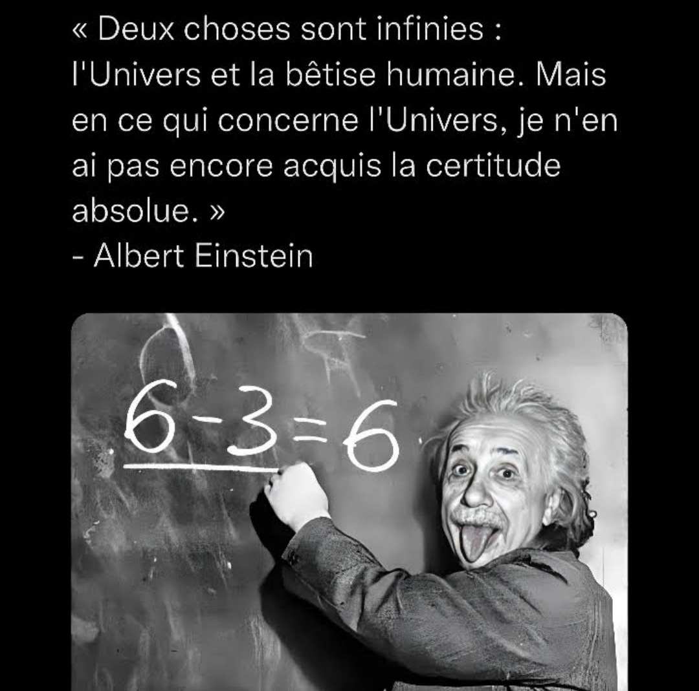
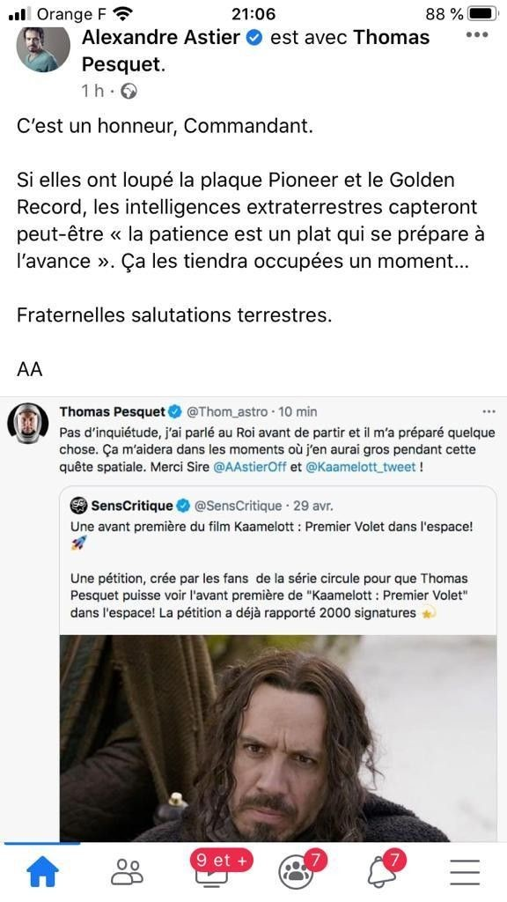

"Il faudra donc 4 millions de litres de peinture pour peindre la piste de skatebord …ce qui me semble un peu beaucoup, mais je n’ai pas d’autres explications."
Espérons que la piste soit sèche quand l'on fera du skate dessus.
"Le résultat de la racine carrée ne peut pas s'arrondir, puisqu'elle est carrée."
Heureusement que l'on ne rencontre pas de racine rectangle.
"La probabilité que surviennent l'événement A est : probable."
Je suis d'accord, cela me semblait probable aussi.
"Ce rectangle est un carré aplati."
La légende raconte qu'il aurait été aplati par Pythagore qui conduisait une citroën sur la A13.
"Un cercle n'a pas de cotés."
Non car un cercle n'est pas carré.
"Les nombres premiers sont les nombres qui ont été inventés en premier."
Et les nombres derniers ?
"Pour savoir si un triangle est rectangle on peut utiliser un théorème mais ça va plus vite si on utilise une équerre."
Tout comme la mesure des angles en radian: ça va plus vite si on utilise un rapporteur.

En Physique-Chimie
"Je ne comprends pas pourquoi Félix Baumgartner s’embêterai à sauter depuis un minable immeuble sur terre, alors qu’il arrive à sauter depuis une capsule dans l’espace."
Je suis sûre que Thomas Pesquet le peut aussi.
"Le plus prudent serait que Félix Baumgartner ouvre son parachute dès le début du saut dans la stratosphère, ainsi il n’est pas nécessaire de calculer précisément l’altitude idéale pour ouvri le parachute."
Si seulement...
"Les ondes sismiques ne se déplacent pas le lundi."
C'est normal: la poste est fermée le dimanche.
"La physique a été découverte par hasard dans l'antiquité par Larry Stote."
Et la chimie aussi du coup ?

En Phylosophie
"Pour le sujet 2 du bac en 2022 (le bac général): Revient-il à l’État de décider de ce qui est juste ? "
"Si le président Macron décide quelque chose, c’est que c’est forcément juste, puisque c’est le président".
C'est pour cette raison que nous avons une réforme des retraites les enfants !
"Si je trouve juste de rompre avec ma petite amie parce qu’elle est agaçante et que je ne veux plus la subir, c’est à moi de décider, pas au juge".
C'est pas faux.
"On peut comparer Descartes à un philosophe."
Bien sûr !
"La mort de Johnny nous a bien montré que même le président de la république n'est pas insensible à l'art."
Assurancetourix était donc un génie incompris.
"Toute sa vie Montaigne a voulu écrire mais il n'a fait que des essais."
Le pauvre...
"N'oublions pas le proverbe : la parole est d'argent mais le silence endort."
Je ne connaissais pas ce proverbe.
"Lorsque l'on meurt, on ne ressent ni douleur ni bonheur. C'est le vide absolu, le néant, le rien. C'est la vie à l'état pur."
Donc quand on meurt on vit.
"Socrate est un bon exemple de choix car il aurait pu aller se cacher dans les milliers d'îles grecques, surtout qu'à l'époque elles n'étaient pas envahies par les touristes, mais il a choisit la ciguë."
C'est sûr qu'à cette époque; il y avait déjà beaucoup de touristes sur les îles grecques.
En Histoire Géographie
"À la question « Quelle est la danse typique de l’Argentine ? », une candidate a répondu : « la paëlla » "
Cela se mange une danse ?
"César mit traîtreusement à mort Vercingétorix et sa femme Alésia..."
Et son fils Astérix aussi malheureusement.
"Les trente glorieuses sont les trente femmes les plus célèbres."
Les sept merveilles du monde sont sept gâteaux différents.
"Le maquis est un poisson japonais."
Les Corses sont donc des Japonais cachés.
"Pour la question Comment appelle-t-on l'ensemble des mythes grecs ? la réponse: "La mythomanie.""
Quel dommage, c'était si près du but.
"La Ve République est celle qui a suivi la IVe République."
Et la IV République est celle qui a suivi la III République.
"L'Île de France est une région d'outremer."
Alors que la Martinique est la capitale de la France.
"L'OTAN signifie l'Organisation des Traîtres et des Américains du Nord"
Et l'ONU du coup ?
"L'agora est une race de chats."
Très connue en plus.
"La guerre froide est la guerre qui se passe dans les pays froids comme près des pôles."
Le père noël a donc connu la guerre froide chez lui.
"L'appel de De Gaulle a eu lieu en juin pour arrêter la crise de mai 68."
De Gaulle avait donc une DeLorean!?!
"A la question : "Citez un grand navigateur", un étudiant a répondu : "Androïd""